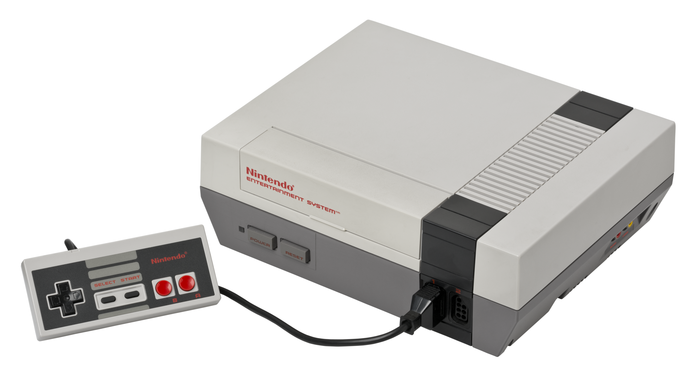

List of Nintendo Home Consoles
Sort by:
Color TV-Game
Release date: June 1, 1977
Units sold: 3 million
The Color TV-Game is the first video game system ever made by Nintendo. The system was released as a series of five dedicated home video game consoles between 1977 and 1983 in Japan only. Nintendo sold three million units of the first four models: one million units of each of the first two models, Color TV-Game 6 and 15; and half a million units of each of the next two models, Block Breaker and Racing 112. The Color TV-Game series has the highest sales figures of all the first generation of video game consoles.
Nintendo Entertainment System
Release date: July 15, 1983
Units sold: 61.91 million
The Nintendo Entertainment System (NES) is an 8-bit third-generation home video game console produced by Nintendo. It was first released in Japan in 1983 as the Family Computer (FC), commonly referred to as Famicom. It was redesigned to become the NES, which was released in American test markets on October 18, 1985, and was soon fully launched in North America and other regions.
Super Nintendo Entertainment System

Release date: November 21, 1990
Units sold: 49.10 million
The Super Nintendo Entertainment System, commonly shortened to Super Nintendo, Super NES or SNES, is a 16-bit home video game console developed by Nintendo that was released in 1990 in Japan and South Korea, 1991 in North America, 1992 in Europe and Oceania and 1993 in South America. In Japan, it is called the Super Famicom (SFC). In South Korea, it is called the Super Comboy and was distributed by Hyundai Electronics. The system was released in Brazil on August 30, 1993, by Playtronic. Although each version is essentially the same, several forms of regional lockout prevent cartridges for one version from being used in other versions.
Nintendo 64

Release date: June 23, 1996
Units sold: 32.93 million
The Nintendo 64 (N64) is a home video game console developed by Nintendo. It was released on June 23, 1996, in Japan; on September 29, 1996, in North America; and on March 1, 1997, in Europe and Australia. The successor to the Super Nintendo Entertainment System, it was the last major home console to use cartridges as its primary storage format until the Nintendo Switch in 2017. As a fifth-generation console, the Nintendo 64 primarily competed with the Sony PlayStation and the Sega Saturn.
GameCube
Release date: September 14, 2001
Units sold: 21.74 million
The GameCube is a home video game console developed and marketed by Nintendo. It was released in Japan on September 14, 2001, in North America on November 18, 2001, in Europe on May 3, 2002, and in Australia on May 17, 2002. It is the successor to the Nintendo 64 (N64) and the predecessor to the Wii. As a sixth-generation console, the GameCube primarily competed with the PlayStation 2 and Xbox.
Wii
Release date: November 19, 2006
Units sold: 101.63 million
The Wii (/'wi:/, WEE) is a home video game console developed and marketed by Nintendo. It was released on November 19, 2006 in North America, and in December 2006 for most other regions of the world. It is Nintendo's fifth major home game console, following the GameCube and is a seventh-generation console alongside Microsoft's Xbox 360 and Sony's PlayStation 3.
Wii U
Release date: November 18, 2012
Units sold: 13.56 million
The Wii U (/ˌwi: 'ju:/; WEE YOO) is a home video game console developed by Nintendo as the successor to the Wii. Released in late 2012, it is the first eighth-generation video game console and competed with Microsoft's Xbox One and Sony's PlayStation 4.
Nintendo Switch

Release date: March 3, 2017
Units sold: 139.36 million
The Nintendo Switch is a video game console developed by Nintendo and released worldwide in most regions on March 3, 2017. Released in the middle of the eighth generation of home consoles, the Switch succeeded the Wii U and competed with Microsoft's Xbox One and Sony's PlayStation 4; it also competes with the ninth-generation consoles, Microsoft's Xbox Series X/S and Sony's PlayStation 5.